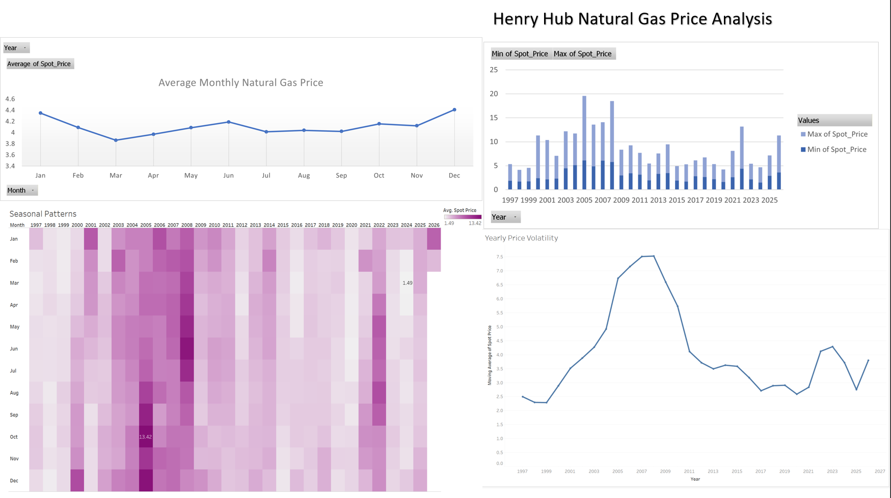

About Me
I'm building expertise in data analytics and engineering to explore innovative ways to leverage data for actionable insights and strategic decision-making. I'm interested in healthcare, health and human performance analytics using data to identify opportunities, solve problems, improve outcomes and enhance performance across sports and everyday life.
Educational Background & Certifications
- Bachelor of Science in Kinesiology - Exercise Science, University of Houston
- Corrective Exercise Specialization, NASM
- Google Data Analytics Professional, Coursera
- CompTIA Data+, CompTIA
- Master of Science in Data Analytics - Data Engineering, Western Governors University (expected 2027)
Tools:
Problem:
Healthcare costs in the U.S. continue to rise each year, placing financial pressure
on both patients and healthcare providers. To manage costs, providers benefit
from understanding which patient characteristics contribute most to high healthcare costs.
Approach:
- Cleaned and organized insurance dataset using Excel, resolving errors and inconsistencies.
- Built dashboards with Pivot Tables to visualize key cost drivers such as age, BMI category, smoking status, family size, and sex.
- Leveraged professional experience working with insurance beneficiaries and carriers to interpret findings and provide meaningful context.
Result / Impact:
- Helps healthcare professionals and organizations improve budgeting and financial planning.
- Identifies factors that support and encourage better design of targeted prevention programs.
- Reduces financial risks by enabling organizations to better assist high-cost patient populations.
- Smoking status and BMI were identified as the strongest predictors of higher healthcare costs.
Recommendations:
| Recommendation |
Owner |
Expected Impact |
Metric to Track |
| Launch a targeted smoking-cessation incentive program for members flagged as smokers, since this group showed the largest gap in average claims cost. |
Wellness / Benefits Team |
Reduces long-term claims cost concentration in the highest-risk segment |
Average annual claims cost per smoking-status cohort |
| Introduce a BMI-based early-engagement outreach (e.g., nutrition coaching, preventive screenings) for members in higher BMI brackets before costs escalate. |
Care Management Team |
Shifts spend from reactive treatment to preventive care, lowering downstream claims |
% of high-BMI members enrolled in preventive programs; year-over-year cost trend for this group |
| Adjust premium tiering or wellness-plan design to reflect the compounding effect of age + smoking status + BMI together, rather than treating each factor in isolation. |
Actuarial / Underwriting Team |
More accurate risk pricing and reduced cross-subsidization between low- and high-risk groups |
Loss ratio by risk-adjusted tier post-implementation |

Problem:
The rapid growth of AI, cloud computing, and hyperscale data centers is exploding energy demand.
These massive facilities require constant electricity, which often comes from natural gas.
Understanding price volatility is critical for companies to manage energy supply, trading exposure, and operational risk.
Approach:
- Extracted historical natural gas price data from the U.S. Energy Information Administration (EIA) and cleaned it using SQL.
- Imported the data into Excel and used pivot tables for detailed trend analysis.
- Built interactive Tableau dashboards to visualize price volatility over time, highlighting seasonal patterns and extreme fluctuations.
- Performed basic statistical analysis to identify periods of highest risk and potential impact on trading strategies.
Result / Impact:
- Provides a clear visual tool that helps stakeholders understand price volatility, aiding in risk management and decision-making.
- Identifies specific periods of high price variability, helping stakeholders anticipate market exposure.
- Demonstrates the value of turning raw data into actionable insights for energy market decisions.
- Winter months consistently experienced the highest volatility due to increased heating demand and storage withdrawals.

Problem:
Gym owner needed a quick and easy way to track key metrics such as membership retention, revenue, and lead generation stats to make informed business decisions. He is nontechnical and needed a simple, user-friendly solution to monitor performance and identify areas for improvement.
Approach:
- I conducted a needs assessment with the owner and collected the necessary data from Glofox gym management software
- I cleaned and transformed the data for analysis based on KPIs that were most important to the owner.
- I designed a user-friendly dashboard with clear visualizations to present the insights.
- I implemented data validation to ensure accuracy and consistency.
- I used VLOOKUP, SUMIF, INDEX MATCH, IFERROR to manipulate and analyze the data.
- I created pivot tables and charts for data visualization.
Result / Impact:
- Provided insights to gym owner to increase membership retention.
- Allows management to identify at-risk members and reward loyal members.
- Management team can better delegate tasks to precisely target goals.
- Enables gym owner ability to easily monitor month-to-month and year-to-date metrics.